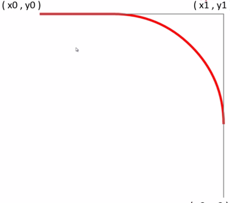

时间总是过得很快。这一周又过去，本周的主要的目的是回顾JS的DOM操作和JS的特性。所以主要是两个方面。闭包、DOM。最后是canvas画图的部分。感觉canvas动画和CSS操作节点有类似的地方，也有自己的特点。
当JS执行一个函数的时候，就好像我要在一个地方建房子，首先你要有一块地来建房子吧。这里就是函数的作用域。房子自己有一个属性a,可以用来住人，这个属性就代表一个参数传递进函数。然后makeAdder 返回一个新的函数。（在房子里面再建一个床睡觉）。这时候JS的垃圾回收器要回收makeAdder创建函数的作用域，也就是房地产商想过来拆房子。但是返回的内层的函数保留一个指向makeAdder的作用域对象的引用。（在别的地方叫做指针）。结果就不会被垃圾回收器回收。直到指向makeAdder作用域对象调用结束。这个床又是有机关的。房地产也搞不定。只有这个床自己坏了，才能把房子拆了。。。这里的内层函数指向外层作用域对象就是一个作用域链，内层函数还可以继续return….. 闭包允许你保存状态——所以它们通常可以代替对象来使用（当你不想再单独创建变量重复操作的时候） 当然闭包有好的和不好的地方。内存泄漏是最常见的现象。当浏览器不清楚函数的周期的时候就会有毛病。就好像这栋楼不拆会影响整个一片地区的房子完成进度。IE浏览器又是比较娇贵的那种。只要一循环引用就炸了。 什么是循环引用：看下面的例子： function leakMemory() { var el = document.getElementById('el'); var o = { 'el': el }; el.o = o; } 在 IE 中，每当在一个 JavaScript 对象和一个本地对象之间形成循环引用时，就会发生内存泄露。 循环引用是很常见的。但是我们最好回避他： 1） 最简单方法就是不要使用el: function addHandler(){ document.getElementById(‘el’).onclick = function(){ this.style.background = ‘red’ } } 2)使用另一个闭包 function addHandler() { var clickHandler = function() { this.style.backgroundColor = 'red'; }; return(function() { var el = document.getElementById('el'); el.onclick = clickHandler; })(); }
从新阅读了闭包发现我有个地方理解有一小小问题。就是内部的函数创造由两部分组成的。一个是函数，以及创造该函数的作用域（上一级函数）的局部变量作为他的环境。也就是他可以得到的参数。还是之前的例子，我们是在madeAdder（a）函数得到了局部变量a，也就是建造房子自带的属性。自带的可以避风的属性（a），给我们一个环境去铺一张床睡觉！ 参考: https://developer.mozilla.org/zh-CN/docs/Web/JavaScript/Closures
这一部分是比较基础的内容，但是坑也不少了。
关于DOM操作遇到的坑总结一下： 1. 空节点:在遍历子节点时候要注意； 2.tr的上一级并不是table上一级的上一级才是。上一级是tbody 3. 注意哪些取DOM的返回的是数组，getElementsByClassName()、getElementsByTagName()、childNodes。 4. 给需要的DOM添加事件的时候，注意不能直接在for循环里面添加。只会触发最后一次循环的事件的结果。处理方法可以用(1)立即调用函数 。(2)在for循环里面只放一个带参数的函数。函数单独写在外面。
canvas 这个是H5的重头戏，当然我们也不可能一下就全部掌握它。但是这确实可以和JS实现一些比较厉害的东西。我们接下来来看看吧
在编程遇到不懂得名词的时候，第一步我就先去找翻译。canvas 百度翻译出来的就是画布，帆布的意思，也就是我们要在上面画图咯。先别着急，文档上写了画图需要一个上下文环境；而且我们还没有确定画布大小怎么画？
var canvas = document.getElementById(‘canvas’);//先拿到DOM canvas.width = xxx canvas.height = xxx 注意:canvas的数字是不带单位的，所以默认是像素单位（符合大众口味） 然后获取我们的上下文环境： var context = canvas.getContext(‘2d’); 好了接下来我们就可以画图了。在画图之前我要说三点： canvas 是基于状态来绘图的！ canvas 是基于状态来绘图的！ canvas 是基于状态来绘图的！ 这是真的，这不是梦。 也就是说不是按画的一个一个对象去控制的。而是按照你的状态进行绘图。简单说就是你画到哪里，就到哪里绘制。感觉就像艺术家有点浪啊。 什么叫基于状态绘图? 我们先来学习一些基础知识再来讨论这个问题。 首先我们有canvas了是不是我们需要一只称手的笔来作画了？我们知道画图其实就是在画两个东西：线条和区域。当然区域是线条组成的。我们先来看看线条吧：有几个要掌握的属性 context.moveTo(x,y) 路径的开始点 context.lineTo(x,y) 路径的结束点 这里出现了路径：就是我们要画的一个路线图，还没有开始绘制 。当然我们绘制之前还要设计一些样式吧（就好像CSS对HTML一样） context.strokeStyle= “”; context.stroke() 把路径 绘制成线 看下面一个例子： 这三条线的颜色是红、绿、蓝吗？ 答案当然不是； 三条线颜色是一样的。这就是基于状态的绘图。 并不是把线条看成对象。绘制完一个到一个。但是我们难道就不能把他们仨的颜色弄成不同的吗? 万能的人类当然给我们设置其他方法，还记得我之前说了一个词吗路径 Path ,这在canvas里是非常常见的。就是把不同的绘制的对象用beginPath() closePath()包裹起来，就能组成了不同的绘制的路径。
好的线段我们讲完了，接下来我们说一说区域的的填充。当我们路径围成区域之后 context.fillStyle() 设置填充的样式； context.fill() 进行填充和stroke()异曲同工之妙。 下面演示一個小demo吧
社会在不断进步，如果每一条线都是这样画岂不是被累死了？当然大哥发明了几个很方便的API cxt.rect(x,y,width,height ) 规划路径； cxt.fillRect(x,y,width,height) 规划路径填充颜色 cxt.strokeRect(x,y,width,height) 规划路径然后描绘线
之前画的是直线，现在我们来介绍四个画曲线API。 context.arc(x0,y0,R,startAngle,endAngle, anticlockwise=false(顺时针 default)) context.arcTo(x1,y1,x2,y2,radius);需要提前给一个控制点x0,y0  图像开始画一定是在X0，Y0，但是结束点不一定是 X2，Y2 context. bezierCurveTo(x1,y1,x2,y2,x3,y3) 二次/三次贝赛尔曲线 可以试试这个http://www.j--d.combezier//画曲线基本靠他了
基本上绘图所用的API都在这里了，还有很多关于fillStyle 和 strokeStyle的介绍，在具体绘制时候可以具体使用。一些图形变换的API和CSS3的类似。不过CSS3的表现力更加丰富一些。关于文字的绘制也比较简单这里不再赘述了，说一些比较常用的API。 1.save() /restore() 大家之前有看到路径可以包裹起来的对吧。当然我们的状态也可以包裹的。这里我没有提及到动画相关内容。如果不把状态包裹起来，我们设置动画是对整个canvas操作的。该动的没动，不该动的动了。restore() 目的就是返回到我们开始改变状态save()之前。这确实很好用的属性； 2.clip() context.clip() 把刚才绘制的路径设置为当前的绘制的环境。也就是画布的区域； 这里放一个简单的demo感受一下clip的效果。
总结：canvas是一个非常大的话题。还有很多东西都没有兼容所有浏览器。但是不久将来我们将会看到很多炫酷网页都是H5和CSS3制作的。加油吧！